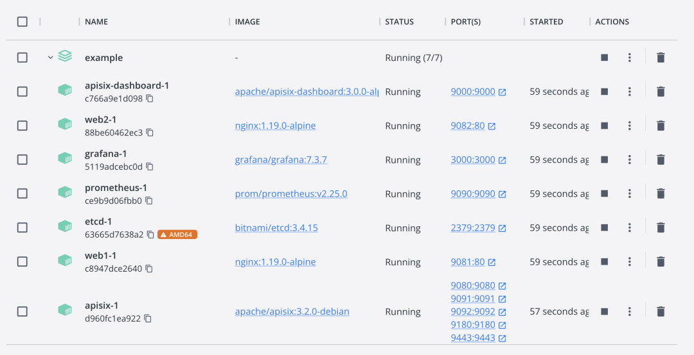
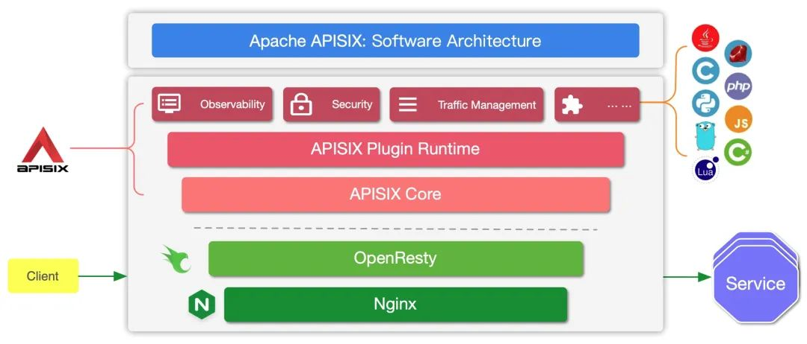
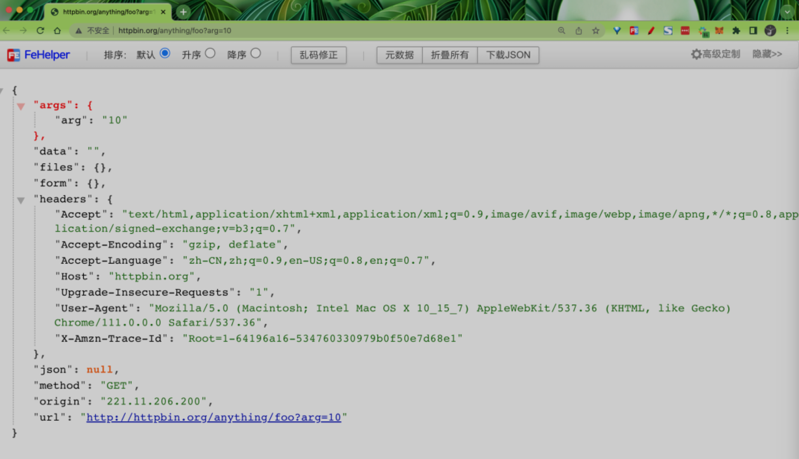
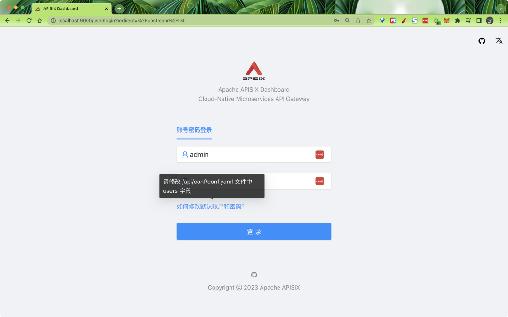
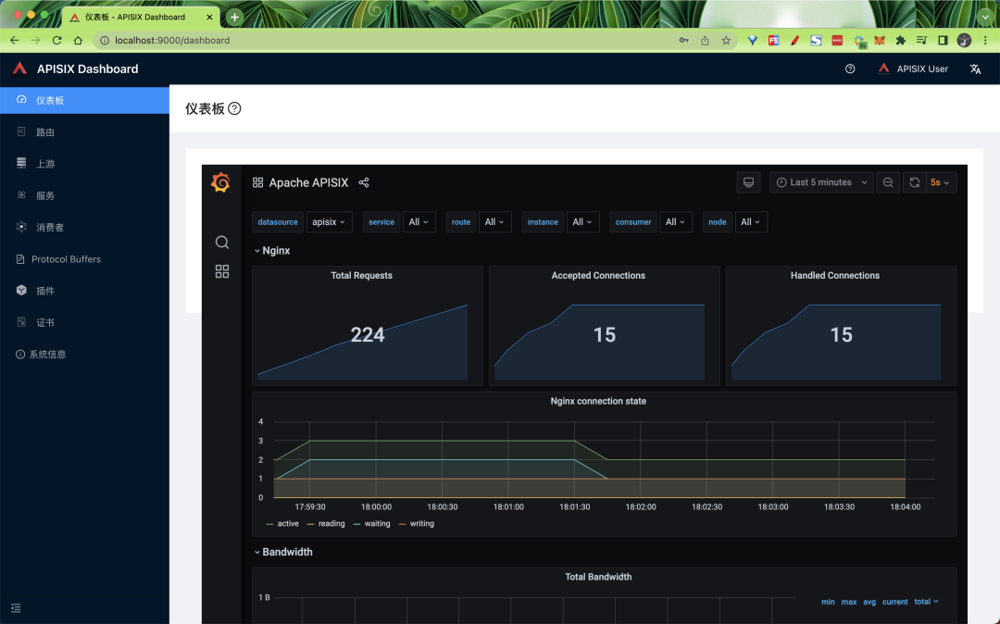
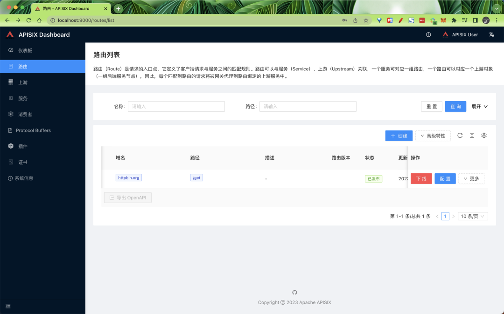
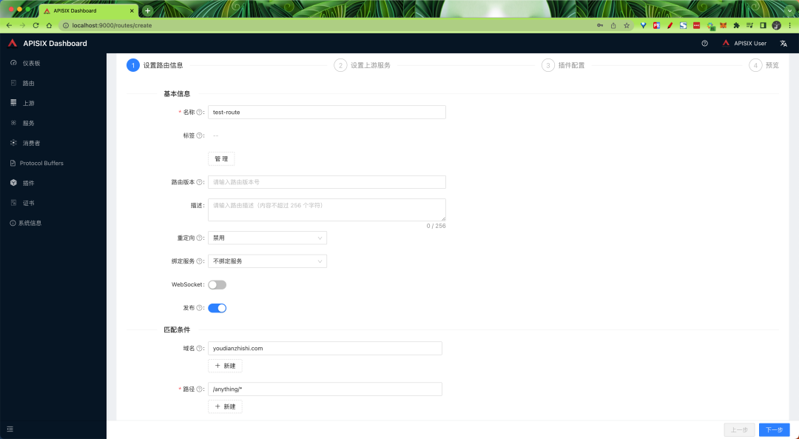
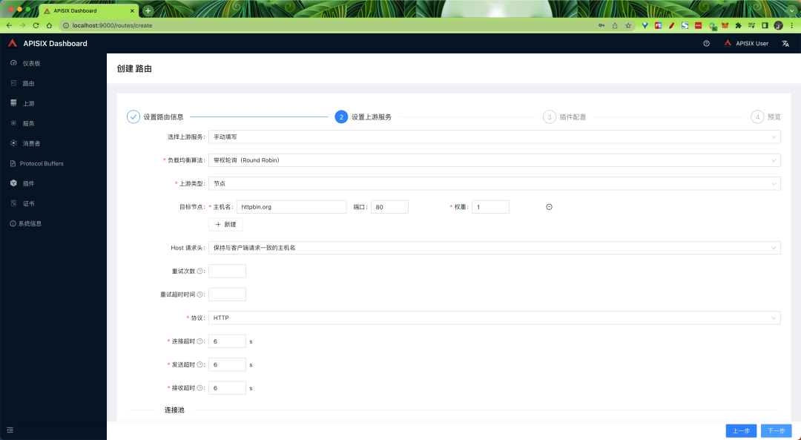

7 云原生 API 网关 APISIX 入门教程
Apache APISIX 是 Apache 软件基金会下的云原生 API 网关，它具有动态、实时、高性能等特点，提供了负载均衡、动态上游、灰度发布（金丝雀发布）、服务熔断、限速、防御恶意攻击、身份认证、可观测性等丰富的流量管理功能。
我们可以使用 Apache APISIX 来处理传统的南北向流量，也可以处理服务间的东西向流量。同时，它也支持作为 Kubernetes Ingress Controller 来使用。
APISIX 基于 Nginx 和 etcd，与传统 API 网关相比，APISIX 具有动态路由和热加载插件功能，避免了配置之后的 reload 操作，同时 APISIX 支持 HTTP(S)、HTTP2、Dubbo、QUIC、MQTT、TCP/UDP 等更多的协议。
而且还内置了 Dashboard，提供强大而灵活的界面。同样也提供了丰富的插件支持功能，而且还可以让用户自定义插件。
主要具有以下几个特点：
- 多平台支持：APISIX 提供了多平台解决方案，它不但支持裸机运行，也支持在 Kubernetes 中使用，还支持与 AWS Lambda、Azure Function、Lua 函数和 Apache OpenWhisk 等云服务集成。
- 全动态能力：APISIX 支持热加载，这意味着你不需要重启服务就可以更新 APISIX 的配置。请访问为什么 Apache APISIX 选择 Nginx + Lua 这个技术栈？以了解实现原理。
- 精细化路由：APISIX 支持使用 NGINX 内置变量做为路由的匹配条件，你可以自定义匹配函数来过滤请求，匹配路由。
- 运维友好：APISIX 支持与以下工具和平台集成：HashiCorp Vault、Zipkin、Apache SkyWalking、Consul、Nacos、Eureka。通过 APISIX Dashboard，运维人员可以通过友好且直观的 UI 配置 APISIX。
- 多语言插件支持：APISIX 支持多种开发语言进行插件开发，开发人员可以选择擅长语言的 SDK 开发自定义插件。
安装 APISIX
为了简单，我们这里可以直接在本地使用 docker 方式来启动 APISIX，首先 Clone 官方提供的 apisix-docker 仓库：
➜ git clone https://github.com/apache/apisix-docker.git
➜ cd apisix-docker
在项目根目录下面的 example 目录中有启动 APISIX 的 docker-compose 配置文件，如下所示：
version: "3"
services:
apisix-dashboard:
image: apache/apisix-dashboard:3.0.0-alpine
restart: always
volumes:
- ./dashboard_conf/conf.yaml:/usr/local/apisix-dashboard/conf/conf.yaml
ports:
- "9000:9000"
networks:
apisix:
apisix:
image: apache/apisix:3.2.0-debian
restart: always
volumes:
- ./apisix_conf/config.yaml:/usr/local/apisix/conf/config.yaml:ro
depends_on:
- etcd
ports:
- "9180:9180/tcp"
- "9080:9080/tcp"
- "9091:9091/tcp"
- "9443:9443/tcp"
- "9092:9092/tcp"
networks:
apisix:
etcd:
image: rancher/coreos-etcd:v3.4.15-arm64
user: root
restart: always
volumes:
- ./etcd_data:/etcd-data
environment:
ETCD_UNSUPPORTED_ARCH: "arm64"
ETCD_ENABLE_V2: "true"
ALLOW_NONE_AUTHENTICATION: "yes"
ETCD_ADVERTISE_CLIENT_URLS: "http://0.0.0.0:2379"
ETCD_LISTEN_CLIENT_URLS: "http://0.0.0.0:2379"
ETCD_DATA_DIR: "/etcd-data"
ports:
- "2379:2379/tcp"
networks:
apisix:
web1:
image: nginx:1.19.10-alpine
restart: always
volumes:
- ./upstream/web1.conf:/etc/nginx/nginx.conf
ports:
- "9081:80/tcp"
environment:
- NGINX_PORT=80
networks:
apisix:
web2:
image: nginx:1.19.10-alpine
restart: always
volumes:
- ./upstream/web2.conf:/etc/nginx/nginx.conf
ports:
- "9082:80/tcp"
environment:
- NGINX_PORT=80
networks:
apisix:
networks:
apisix:
driver: bridge
该 compose 里面主要包含了 APISIX 的三个容器：apisix、etcd 以及 apisix-dashboard。现在我们就可以使用 docker-compose 来进行一键启动：
➜ docker-compose -f docker-compose.yml up -d
另外两个 nginx 容器是用于测试的：

docker-compose
请确保其他系统进程没有占用 9000、9080、9091、9092、9180、9443 和 2379 端口。如果启动有错误，可以尝试为 examples 目录设置成 777 权限，保证 etcd 数据有权限写入。
当 APISIX 启动完成后我们就可以通过 curl 来访问正在运行的 APISIX 实例。比如，可以发送一个简单的 HTTP 请求来验证 APISIX 运行状态是否正常。
➜ curl "http://127.0.0.1:9080" --head
HTTP/1.1 404 Not Found
Date: Tue, 21 Mar 2023 07:38:45 GMT
Content-Type: text/plain; charset=utf-8
Connection: keep-alive
Server: APISIX/3.2.0
现在，你已经成功安装并运行了 APISIX ！
功能测试
接下来我们来了解下 APISIX 的一些功能。在了解之前我们需要对 APISIX 的几个主要概念和组件简单了解下：
上游
Upstream 也称为上游，上游是对虚拟主机的抽象，即应用层服务或节点的抽象。
上游的作用是按照配置规则对服务节点进行负载均衡，它的地址信息可以直接配置到路由或服务上。当多个路由或服务引用同一个上游时，可以通过创建上游对象，在路由或服务中使用上游的 ID 方式引用上游，减轻维护压力。
路由
Route 也称为路由，是 APISIX 中最基础和最核心的资源对象。
APISIX 可以通过路由定义规则来匹配客户端请求，根据匹配结果加载并执行相应的插件，最后把请求转发给到指定的上游服务。路由中主要包含三部分内容：匹配规则、插件配置和上游信息。
服务
Service 也称为服务，是某类 API 的抽象（也可以理解为一组 Route 的抽象）。
它通常与上游服务抽象是一一对应的，Route 与 Service 之间，通常是 N:1 的关系。
消费者
Consumer 是某类服务的消费者，需要与用户认证配合才可以使用。
当不同的消费者请求同一个 API 时，APISIX 会根据当前请求的用户信息，对应不同的 Plugin 或 Upstream 配置。
如果 Route、Service、Consumer 和 Plugin Config 都绑定了相同的插件，只有消费者的插件配置会生效。
插件配置的优先级由高到低的顺序是：
Consumer > Route > Plugin Config > Service
对于 API 网关而言，一般情况可以通过请求域名、客户端 IP 地址等字段识别到某类请求方，然后进行插件过滤并转发请求到指定上游。但有时候该方式达不到用户需求，因此 APISIX 支持了 Consumer 对象。
插件
Plugin 也称之为插件，它是扩展 APISIX 应用层能力的关键机制，也是在使用 APISIX 时最常用的资源对象。
插件主要是在 HTTP 请求或响应生命周期期间执行的、针对请求的个性化策略。插件可以与路由、服务或消费者绑定。
如果路由、服务、插件配置或消费者都绑定了相同的插件，则只有一份插件配置会生效，插件配置的优先级由高到低顺序是：
消费者 > 路由 > 插件配置 > 服务。
同时在插件执行过程中也会涉及 6 个阶段，分别是 rewrite、access、
before_proxy、header_filter、body_filter和 log。
Admin API
APISIX 提供了强大的 Admin API 和 Dashboard 供用户使用，Admin API 是一组用于配置 Apache APISIX 路由、上游、服务、SSL 证书等功能的 RESTful API。
我们可以通过 Admin API 来获取、创建、更新以及删除资源。同时得益于 APISIX 的热加载能力，资源配置完成后 APISIX 将会自动更新配置，无需重启服务，具体的架构原理可以查看下面的架构图：

主要分为两个部分：
- APISIX 核心：包括 Lua 插件、多语言插件运行时（Plugin Runner）、Wasm 插件运行时等；
- 功能丰富的各种内置插件：包括可观测性、安全、流量控制等。
APISIX 在其核心中，提供了路由匹配、负载均衡、服务发现、API 管理等重要功能，以及配置管理等基础性模块。
除此之外，APISIX 插件运行时也包含其中，提供原生 Lua 插件的运行框架和多语言插件的运行框架，以及实验性的 Wasm 插件运行时等。APISIX 多语言插件运行时提供多种开发语言的支持，比如 Golang、Java、Python、JS 等。
APISIX 目前也内置了各类插件，覆盖了 API 网关的各种领域，如认证鉴权、安全、可观测性、流量管理、多协议接入等。当前 APISIX 内置的插件使用原生 Lua 实现，关于各个插件的介绍与使用方式，后续我们再介绍。
创建路由
下面的示例中我们先使用 Admin API 来创建一个 Route 并与 Upstream 绑定，当一个请求到达 APISIX 时，APISIX 会将请求转发到指定的上游服务中。
以下示例代码中，我们将为路由配置匹配规则，以便 APISIX 可以将请求转发到对应的上游服务：
➜ curl "http://127.0.0.1:9180/apisix/admin/routes/1" -X PUT -d '
{
"methods": ["GET"],
"host": "foobar.com",
"uri": "/anything/*",
"upstream": {
"type": "roundrobin",
"nodes": {
"httpbin.org:80": 1
}
}
}' -H 'X-API-KEY: edd1c9f034335f136f87ad84b625c8f1'
# 正常会得到如下所示的结果
{"value":{"create_time":1679392758,"methods":["GET"],"host":"foobar.com","status":1,"priority":0,"update_time":1679392758,"upstream":{"pass_host":"pass","hash_on":"vars","type":"roundrobin","nodes":{"httpbin.org:80":1},"scheme":"http"},"id":"1","uri":"/anything/*"},"key":"/apisix/routes/1"}
其中的 X-API-KEY 的值在 APISIX 的配置文件中
apisix_config.yaml中有配置，位于deployment.admin.admin_key下面。
该配置意味着，当请求满足下述的所有规则时，请求将被转发到上游服务（httpbin.org:80）：
- 请求的 HTTP 方法为 GET。
- 请求头包含 host 字段，且它的值为
foobar.com。 - 请求路径匹配
/anything/*，*意味着任意的子路径，例如/anything/foo?arg=10。
当路由创建完成后，现在我们就可以通过以下命令访问上游服务了：
➜ curl -i -X GET "http://127.0.0.1:9080/anything/foo?arg=10" -H "Host: foobar.com"
HTTP/1.1 200 OK
Content-Type: application/json
Content-Length: 443
Connection: keep-alive
Date: Tue, 21 Mar 2023 08:25:49 GMT
Access-Control-Allow-Origin: *
Access-Control-Allow-Credentials: true
Server: APISIX/3.2.0
{
"args": {
"arg": "10"
},
"data": "",
"files": {},
"form": {},
"headers": {
"Accept": "*/*",
"Host": "foobar.com",
"User-Agent": "curl/7.85.0",
"X-Amzn-Trace-Id": "Root=1-64196a0d-1d2b654b29cbed3f7a9302c7",
"X-Forwarded-Host": "foobar.com"
},
"json": null,
"method": "GET",
"origin": "172.22.0.1, 221.11.206.200",
"url": "http://foobar.com/anything/foo?arg=10"
}
该请求将被 APISIX 转发到 http://httpbin.org:80/anything/foo?arg=10，我们可以和直接访问上游数据进行对比。

httpbin数据
使用上游服务创建路由
我们还可以通过以下命令创建一个上游，并在路由中使用它，而不是直接将其配置在路由中：
➜ curl "http://127.0.0.1:9180/apisix/admin/upstreams/1" -X PUT -d '
{
"type": "roundrobin",
"nodes": {
"httpbin.org:80": 1
}
}' -H 'X-API-KEY: edd1c9f034335f136f87ad84b625c8f1'
# 正常会得到如下所示的输出
{"value":{"type":"roundrobin","create_time":1679392818,"pass_host":"pass","hash_on":"vars","update_time":1679392818,"nodes":{"httpbin.org:80":1},"id":"1","scheme":"http"},"key":"/apisix/upstreams/1"}
该上游配置与上一节配置在路由中的上游相同。同样使用了 roundrobin 作为负载均衡机制，并设置了 httpbin.org:80 为上游服务。为了将该上游绑定到路由，此处需要把 upstream_id 设置为 "1"。
上游服务创建完成后，现在我们可以通过以下命令将其绑定到指定的 /get 路由：
➜ curl "http://127.0.0.1:9180/apisix/admin/routes/1" -X PUT -d '
{
"uri": "/get",
"host": "httpbin.org",
"upstream_id": "1"
}' -H 'X-API-KEY: edd1c9f034335f136f87ad84b625c8f1'
# 正常会得到如下所示的输出
{"value":{"upstream_id":"1","status":1,"create_time":1679392758,"host":"httpbin.org","update_time":1679392834,"priority":0,"id":"1","uri":"/get"},"key":"/apisix/routes/1"}
我们已经创建了路由与上游服务，现在可以通过以下命令访问上游服务：
➜ curl -i -X GET "http://127.0.0.1:9080/get?foo1=bar1&foo2=bar2" -H "Host: httpbin.org"
HTTP/1.1 200 OK
Content-Type: application/json
Content-Length: 370
Connection: keep-alive
Date: Tue, 21 Mar 2023 08:40:19 GMT
Access-Control-Allow-Origin: *
Access-Control-Allow-Credentials: true
Server: APISIX/3.2.0
{
"args": {
"foo1": "bar1",
"foo2": "bar2"
},
"headers": {
"Accept": "*/*",
"Host": "httpbin.org",
"User-Agent": "curl/7.85.0",
"X-Amzn-Trace-Id": "Root=1-64196d73-165daa124c362e5d4c6bb79d",
"X-Forwarded-Host": "httpbin.org"
},
"origin": "172.22.0.1, 221.11.206.200",
"url": "http://httpbin.org/get?foo1=bar1&foo2=bar2"
}
同样该请求也会被 APISIX 转发到 http://httpbin.org:80/anything/foo?arg=10。
使用 Dashboard
同样我们还可以使用 APISIX Dashboard 创建和配置类似于上述步骤中所创建的路由。
如果你已经完成上述操作步骤，正常现在我们已经可以通过 localhost:9000 来访问 APISIX Dashboard 了。

默认的用户名和密码均为 admin，在 examples 目录中 dashboard_conf下面的 conf.yaml进行配置：
authentication:
secret: secret
expire_time: 3600
users:
- username: admin
password: admin
- username: user
password: user
上面我们的 docker-compose 中也已经启动了 Grafana，所以登录后我们也可以在首页仪表盘上配置 Grafana，地址为 http://localhost:3000。

登录后单击侧边栏中的路由，可以查看已经配置的路由列表，可以看到在上述步骤中使用 Admin API 创建的路由。

你也可以通过单击创建按钮并按照提示创建新路由：


如果想利用 APISIX 实现身份验证、安全性、限流限速和可观测性等功能，可通过添加插件实现。
限流限速和安全插件
在很多时候，我们的 API 并不是处于一个非常安全的状态，它随时会收到不正常的访问，一旦访问流量突增，可能就会导致你的 API 发生故障，这个时候我们就可以通过速率限制来保护 API 服务，限制非正常的访问请求。
对此，我们可以使用如下方式进行：
- 限制请求速率；
- 限制单位时间内的请求数；
- 延迟请求；
- 拒绝客户端请求；
- 限制响应数据的速率。
APISIX 提供了多个内置的限流限速的插件，包括 limit-conn、limit-count 和 limit-req。
- limit-conn 插件主要用于限制客户端对服务的并发请求数。
- limit-req 插件使用漏桶算法限制对用户服务的请求速率。
- limit-count 插件主要用于在指定的时间范围内，限制每个客户端总请求个数。
这里我们就以 limit-count 插件为例，来说明如何通过限流限速插件保护我们的 API 服务。如下所示。
使用下面的命令首先创建一条路由：
➜ curl -i http://127.0.0.1:9180/apisix/admin/routes/1 -X PUT -d '
{
"uri": "/index.html",
"plugins": {
"limit-count": {
"count": 2,
"time_window": 60,
"rejected_code": 503,
"key_type": "var",
"key": "remote_addr"
}
},
"upstream_id": "1"
}' -H 'X-API-KEY: edd1c9f034335f136f87ad84b625c8f1'
这里我们直接使用前面已经创建的上游（ID 为 1）来创建/更新一条路由，并且在 plugins 中启用了 limit-count 插件，该插件仅允许客户端在 60 秒内，访问上游服务 2 次，超过两次，就会返回 503 错误码。
上面的指令执行成功后，接下来我们连续使用下面的命令访问三次后，则会出现如下错误。
➜ curl http://127.0.0.1:9080/index.html
➜ curl http://127.0.0.1:9080/index.html
➜ curl http://127.0.0.1:9080/index.html
正常情况下就会出现如下所示的 503 错误，则表示 limit-count 插件已经配置成功。
<html>
<head>
<title>503 Service Temporarily Unavailable</title>
</head>
<body>
<center><h1>503 Service Temporarily Unavailable</h1></center>
<hr />
<center>openresty</center>
<p>
<em>Powered by <a href="https://apisix.apache.org/">APISIX</a>.</em>
</p>
</body>
</html>
缓存响应
当我们在构建一个 API 时，肯定希望他能够尽量保持简单和快速，一旦读取相同数据的并发需求增加，可能会面临一些问题，一般我们直接的办法就是引入缓存，当然我们可以在不同层面去进行缓存的。
- 边缘缓存或 CDN
- 数据库缓存
- 服务器缓存（API 缓存）
- 浏览器缓存
反向代理缓存是另一种缓存机制，通常在 API 网关内实现。它可以减少对你的端点的调用次数，也可以通过缓存上游的响应来改善对你的 API 请求的延迟。
如果 API Gateway 的缓存中有所请求资源的新鲜副本，它就会使用该副本直接满足请求，而不是向端点发出请求。如果没有找到缓存的数据，请求就会转到预定的上游服务（后端服务）。
我们这里主要了解的是 API 网关层的缓存，也就是 APISIX 提供的 API 缓存，它也可以和其他插件一起使用，目前支持基于磁盘的缓存，也可以在插件配置中指定缓存过期时间或内存容量等。
比如我们现在有一个 /products 的 API 接口，通常每天只更新一次，而该端点每天都会收到重复的数十亿次请求，以获取产品列表数据，现在我们就可以使用 APISIX 提供的一个名为 proxy-cache 的插件来缓存该接口的响应。
这里我们还是使用前面 ID 为 1 的上游对象，使用 /anything/products 来模拟产品接口，直接执行下面的命令来更新路由的插件：
➜ curl "http://127.0.0.1:9180/apisix/admin/routes/1" -H "X-API-KEY: edd1c9f034335f136f87ad84b625c8f1" -X PUT -d '{
"name": "Route for API Caching",
"methods": [
"GET"
],
"uri": "/anything/*",
"plugins": {
"proxy-cache": {
"cache_key": [
"$uri",
"-cache-id"
],
"cache_bypass": [
"$arg_bypass"
],
"cache_method": [
"GET"
],
"cache_http_status": [
200
],
"hide_cache_headers": true,
"no_cache": [
"$arg_test"
]
}
},
"upstream_id": "1"
}'
更新完成后现在我们来对该接口发起几次请求：
➜ curl http://localhost:9080/anything/products -i
HTTP/1.1 200 OK
Content-Type: application/json
Content-Length: 398
Connection: keep-alive
Date: Tue, 21 Mar 2023 10:48:42 GMT
Access-Control-Allow-Origin: *
Access-Control-Allow-Credentials: true
Server: APISIX/3.2.0
Apisix-Cache-Status: MISS
➜ curl http://localhost:9080/anything/products -i
HTTP/1.1 200 OK
Content-Type: application/json
Content-Length: 398
Connection: keep-alive
Date: Tue, 21 Mar 2023 10:48:42 GMT
Access-Control-Allow-Origin: *
Access-Control-Allow-Credentials: true
Server: APISIX/3.2.0
Apisix-Cache-Status: HIT
正常每次都应该收到 HTTP 200 OK 响应，但是第一次响应中的 Apisix-Cache-Status 显示为 MISS，这意味着当请求第一次进入路由时，响应还没有被缓存。而
后面的几次请求会得到一个缓存的响应，缓存指标变为了 HIT，表示我们的响应缓存成功了。